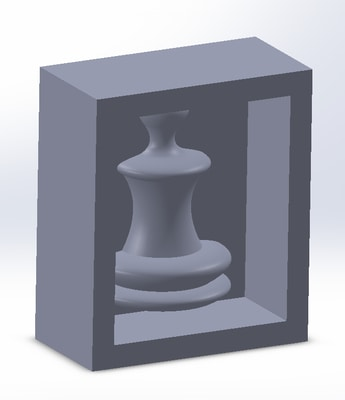
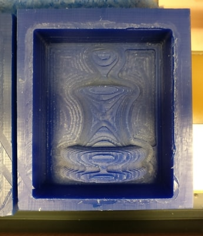
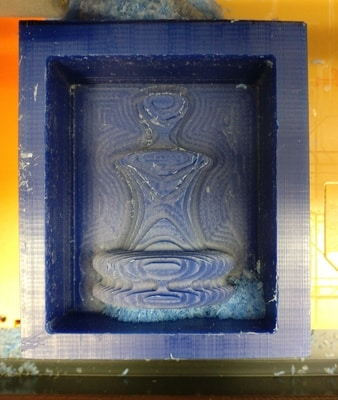
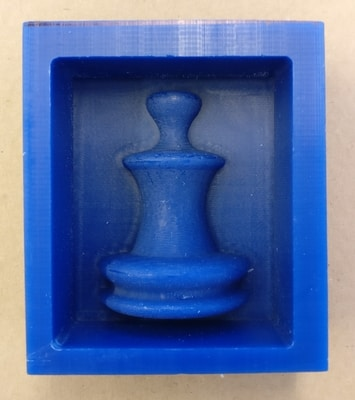
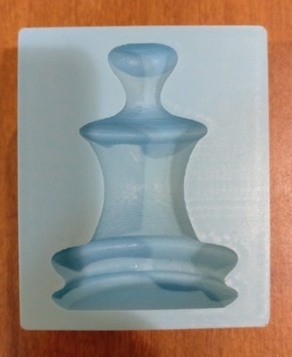
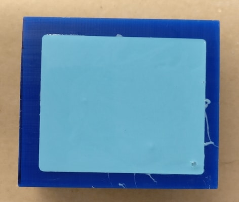
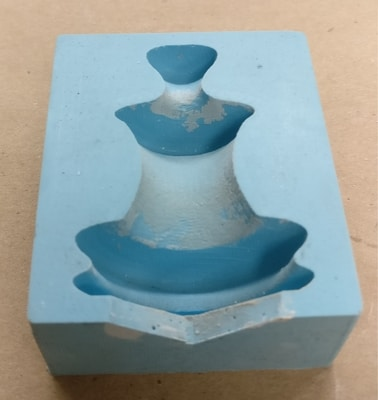
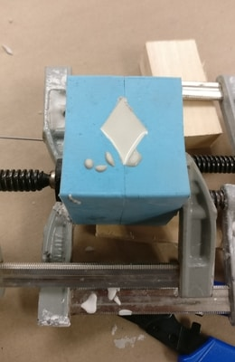
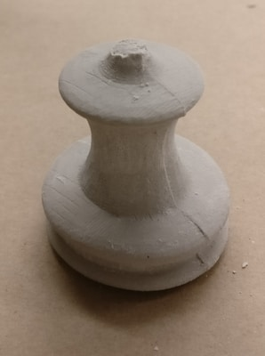

For this week I wanted to mold for a chess piece. This week will directly help me towards my final project.
I decided to switch to Solidwords. Previously I was using OnShape to design 3D stuff. So the trick this week is to CAD not the object, but the mold to make a mold. My first step was to make 2D spline of the edge of a pawn. Then I would rotate the spline about the center axis to generate the 3D pawn. I actually only want half of it. I will make two halfs that will combine to make a full pawn. From there I would need to make rectangular extrusions to make the full design of the mold into the base wax. The base wax is 3.0 in x 3.5 in x 1.5 in.
One thing to keep in mind in the future to take into account the depth of the design. You can see from the CAD that the mold has walls. It can't be too deep, else the endmill won't be able to reach the bottom at edge of the walls. Otherwise, the toolpath needs to strip away more material so that it can reach everything without obstructon. This time around, I got lucky. I did run into issues, but it was salvageable. About 1 inch should do.
I generate the STL for the Roland SRM-20 machine. It is kind of incredible that we are using the same machine that cut the PCBs to cut large wax blocks. fabmodules has a mod to take the STL to generate the 3D toolpath for the mill.
It would take me 2 tries to cut the wax correctly. The first time I failed because I used a too short of a bit. At some point during the rough cut, the machine would stop because bit went too far and the wax hit where the endmill connects. That was okay for the most part. I changed to a longer endmill and tried again. This is where the frustrating part came in. When I changed endmills the z axis was zeroed from 50 to 70 mm. What I didn't know is that the z axis is capped at 58. This meant that when I thought the endmill was at 70, it was physically at 58 but the software thought that the z axis was much higher. The problem that comes up is that when I generate the tool path, the entire path is elevated too high. I ran a few runs and couldn't find out why the machine was just cutting air. I gave up on this wax mold, for which I didn't have the chance to even do the finishing cut, and just simply tried again.
The funny thing is that when I started trial 2, it immediately came to me why my last attempt failed. I had raised the z axis up to 70, and noticed that endmill didn't actually move. With this in mind, I was then able to simply do a rough cut and a finishing cut. All in all, it took ~2 hours to cut the wax. The result turned out very nice.
 Now I needed to pour oomoo. In hindsight, I should have probably included the entrypoint of the plaster into considerating. As it is, after creating the oomoo mold, the object is completely contained inside the mold. This isn't too big of a deal. I used the same wax base to create the two halves of the mold.
 Pouring the plaster would take some ingenuity. I cut a triange into the bottom of the molds so that I could pour the plaster into it. I also added two small holes to the top so that there was an air pathway.
 I wasn't being careful and I broke the top off. Whoops.
